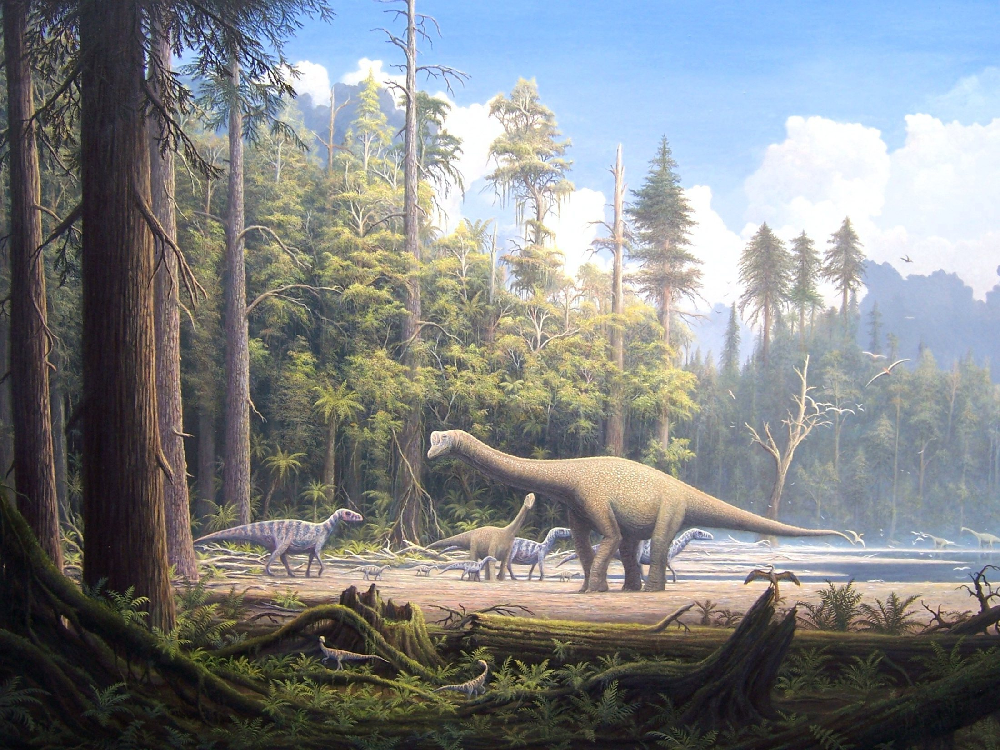
When Earth Became Jurassic
Dinosaurs in a Changing World

Dinosaurs in a Changing World
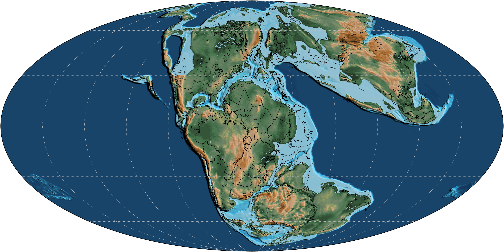
The Jurassic was a middle time in dinosaur history. It came after the Triassic and before the Cretaceous. While dinosaurs spread, Earth itself was changing.
The Jurassic world was warm, with no ice caps. Ferns, tree ferns, conifers, ginkgos, cycads, and horsetails made green places for animals to live.
Rivers and floodplains left layers of rock full of clues. In western North America, the Morrison Formation saved many Late Jurassic dinosaur fossils.
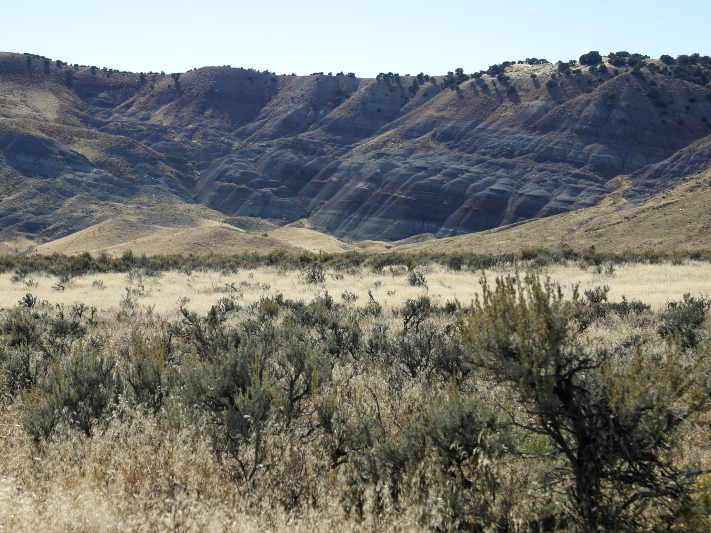
Brachiosaurus was a high browser. Its front legs were longer than its back legs, so its shoulders rose high like a living lookout tower.
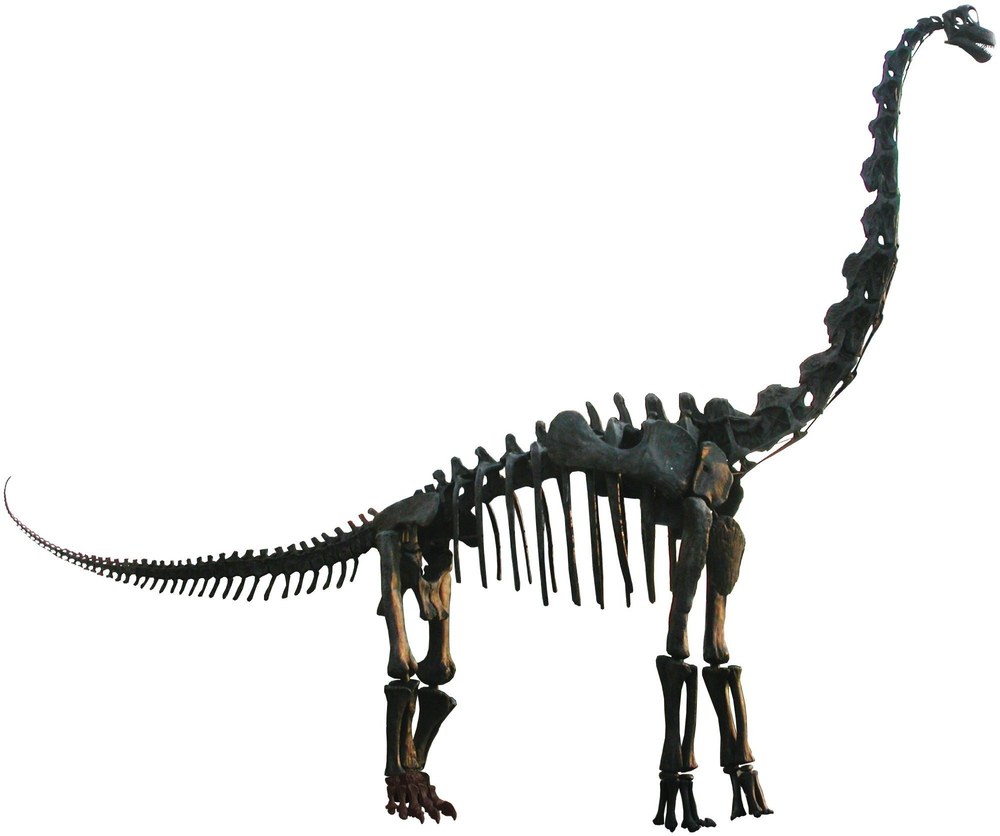
Apatosaurus was another giant plant-eater. It walked on four sturdy legs, carried a long neck, and swung a long whip-like tail behind it.
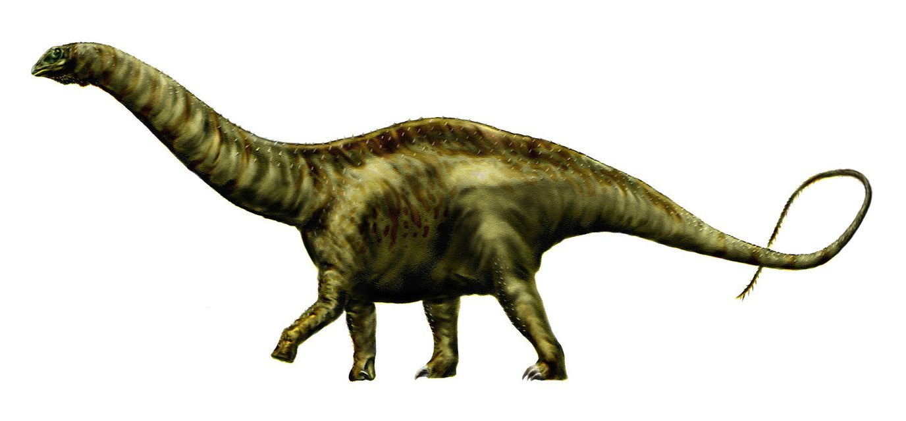
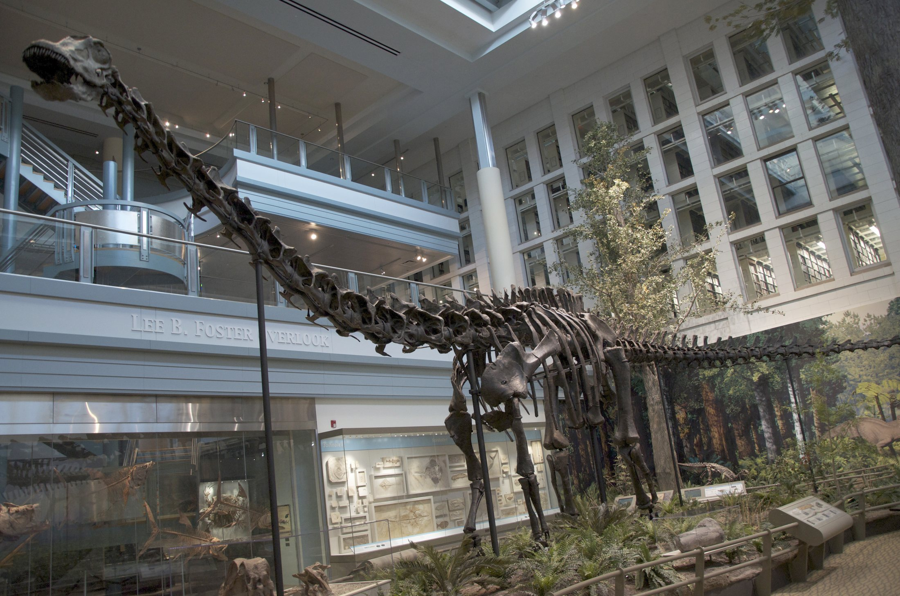
Diplodocus was built long and low. Its tiny peg-like teeth sat near the front of its jaws, and its tail made up a huge part of its length.
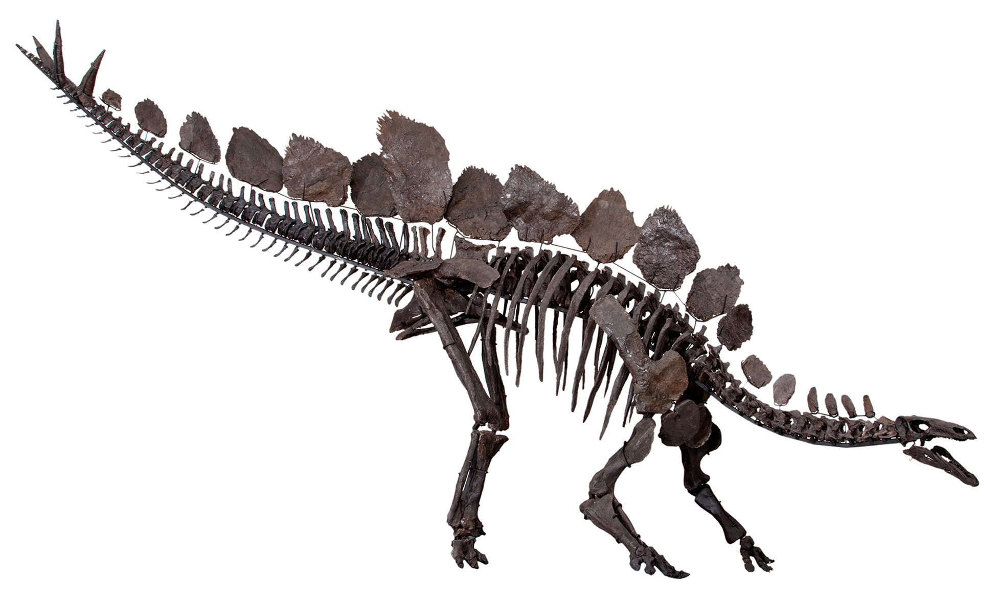
Stegosaurus wore tall plates along its back. Near the end of its tail were sharp spikes that probably helped protect it from hungry predators.
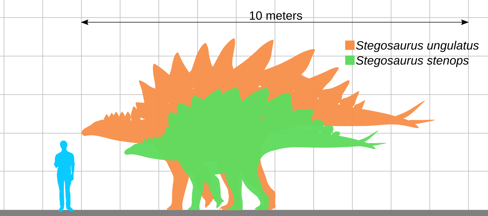
Stegosaurus was not built like a runner. It had a small head, a short neck, and a heavy plant-eating body balanced on four legs.
Allosaurus was a big Jurassic hunter. It ran on two strong legs, balanced with a long tail, and had many sharp teeth for biting meat.
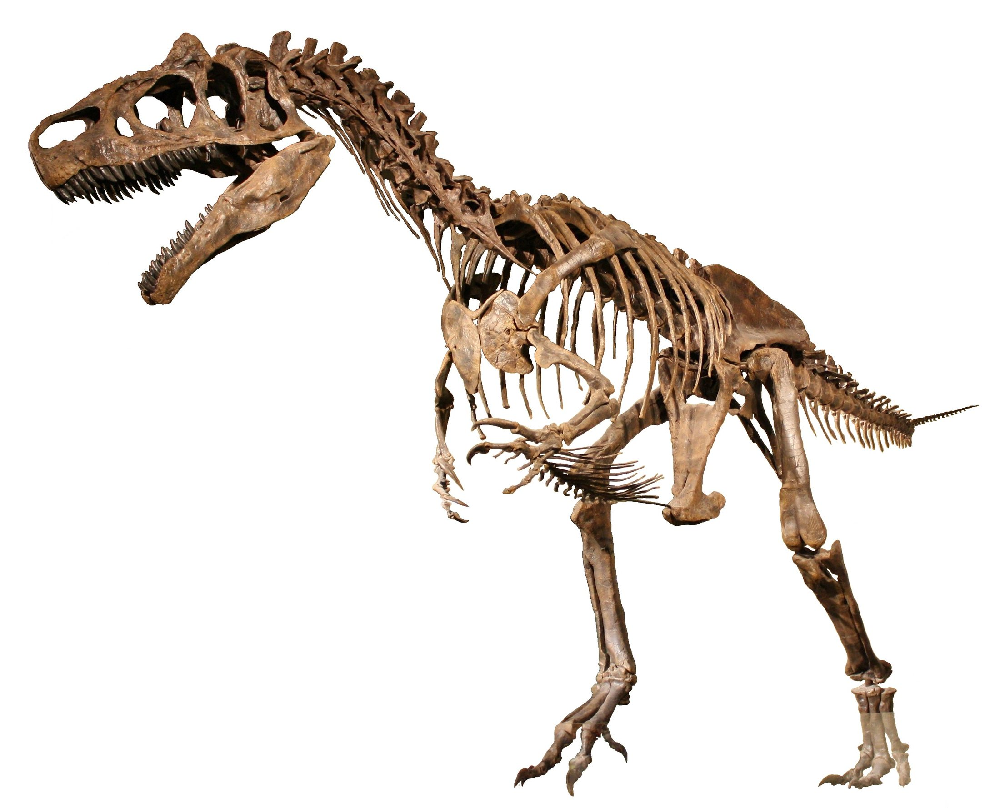
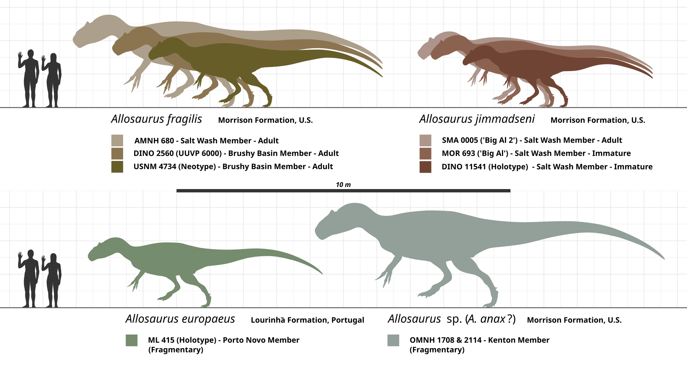
Allosaurus was large, but the giant plant-eaters were much larger. In Jurassic habitats, size could help protect a dinosaur from danger.
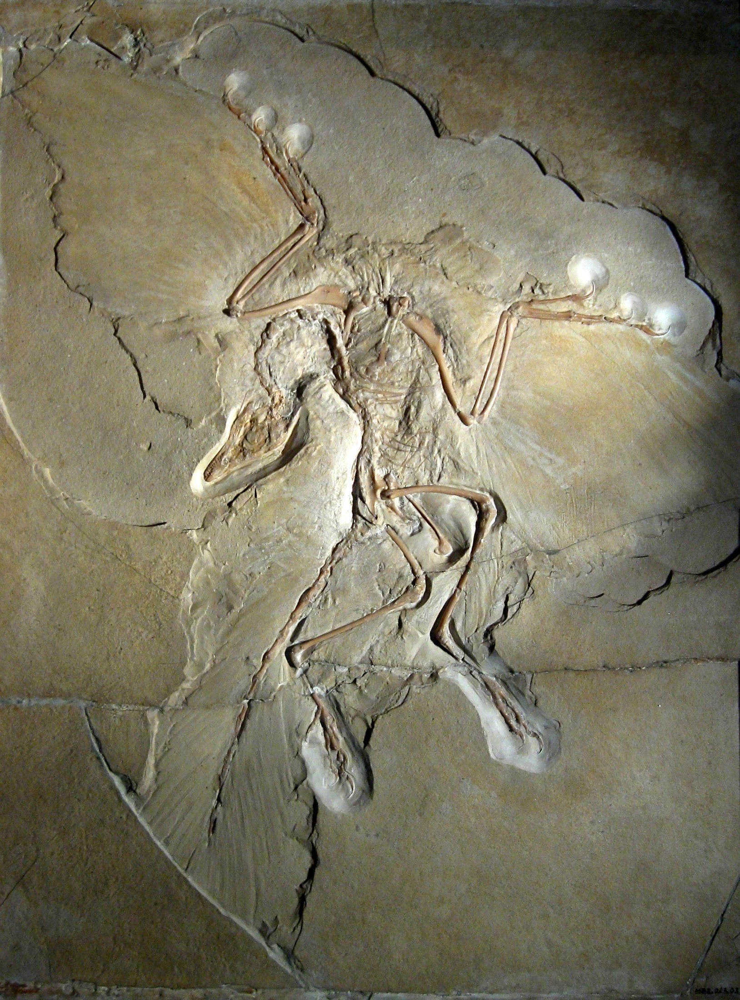
Near the end of the Jurassic, some small theropod dinosaurs were bird-like. Archaeopteryx had feathers and wings, but also teeth, claws, and a long bony tail.